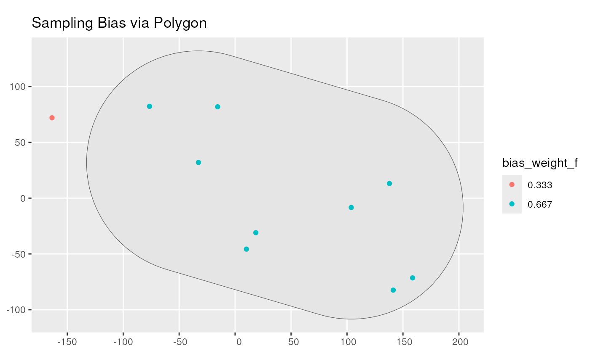

Generate a sampling bias via a polygon
Source:R/apply_polygon_sampling_bias.R
apply_polygon_sampling_bias.RdThe function adds a sampling bias weight column containing the sample probability based on bias strength within a given polygon.
Arguments
- occurrences_sf
An sf object with POINT geometry.
- bias_area
An sf object with POLYGON geometry. The area in which the sampling will be biased.
- bias_strength
A positive numeric value. The strength of the bias to be applied in the biased area (as a multiplier). Above 1, area will be oversampled. Below 1, area will be undersampled. For example, a value of 50 will result in 50 times more samples within the bias_area than outside. Conversely, a value of 0.5 will result in half less samples within the bias_area than outside.
Value
An sf object with POINT geometry with a bias_weight column containing the sampling probability based on sampling bias.
See also
Other detection:
apply_manual_sampling_bias()
Examples
# Load packages
library(sf)
library(dplyr)
library(ggplot2)
# Set seed for reproducibility
set.seed(123)
# Simulate some occurrence data with coordinates and time points
num_points <- 10
occurrences <- data.frame(
lon = runif(num_points, min = -180, max = 180),
lat = runif(num_points, min = -90, max = 90),
time_point = 0
)
# Convert the occurrence data to an sf object
occurrences_sf <- st_as_sf(occurrences, coords = c("lon", "lat"))
# Create bias_area polygon overlapping at least two of the points
selected_observations <- st_union(occurrences_sf[2:3,])
bias_area <- st_convex_hull(selected_observations) %>%
st_buffer(dist = 100) %>%
st_as_sf()
occurrence_bias_sf <- apply_polygon_sampling_bias(
occurrences_sf,
bias_area,
bias_strength = 2)
occurrence_bias_sf
#> Simple feature collection with 10 features and 2 fields
#> Geometry type: POINT
#> Dimension: XY
#> Bounding box: xmin: -163.5997 ymin: -82.42928 xmax: 158.5682 ymax: 82.23
#> CRS: NA
#> time_point geometry bias_weight
#> 1 0 POINT (-76.47209 82.23) 0.6666667
#> 2 0 POINT (103.7898 -8.399852) 0.6666667
#> 3 0 POINT (-32.76831 31.96271) 0.6666667
#> 4 0 POINT (137.8863 13.07401) 0.6666667
#> 5 0 POINT (158.5682 -71.47356) 0.6666667
#> 6 0 POINT (-163.5997 71.96849) 0.3333333
#> 7 0 POINT (10.11798 -45.70421) 0.6666667
#> 8 0 POINT (141.2709 -82.42928) 0.6666667
#> 9 0 POINT (18.51661 -30.97427) 0.6666667
#> 10 0 POINT (-15.6187 81.81066) 0.6666667
# Visualise where the bias is
occurrence_bias_sf %>%
mutate(bias_weight_f = as.factor(round(bias_weight, 3))) %>%
ggplot() +
geom_sf(data = bias_area) +
geom_sf(aes(colour = bias_weight_f)) +
ggtitle("Sampling Bias via Polygon")
